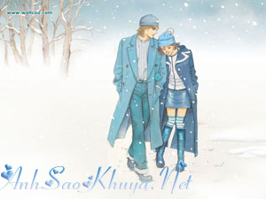

|
Có lẽ phải đến giờ phút này anh mới thấm thía được cảm giác mất em, thứ cảm giác mà suốt hơn 1 năm qua luôn thường trực bên cạnh cuộc sống của anh - cảm giác nặng nề, trống rỗng, bế tắc đến tận cùng... Mọi thứ khi kết thúc luôn mang lại cho người ta vô vàn sự tiếc nuối. Đúng và sai, được và mất tồn tại song song trong thời gian mình yêu nhau. Mọi quan niệm, mọi nhìn nhận, mọi đánh giá đều được phá vỡ để giờ đây nó bắt đầu được thực hiện. Em đến và đi nhẹ nhàng như một cơn gió thoảng qua nhưng những dư âm để lại như vừa qua một cơn bão lớn. Có lẽ rồi sau này mình sẽ chỉ còn lại là dĩ vãng của cuộc đời nhau nhưng những kỷ niệm, những hình ảnh em mang đến trong suốt quãng thời gian ngắn ngủi qua sẽ mãi mãi đọng lại trong suy nghĩ, trong tâm tưởng anh. Tất cả chỉ là hư ảo? Liệu có phải không đây?… Không, chắc chắn không. Em đã hiện hữu, đang hiện hữu và vẫn sẽ mãi hiện hữu quanh cuộc sống của anh. Mọi lời hứa, mọi ước vọng, mọi lời nói đã từng được phát ra vẫn giữ mãi giá trị của nó. Em đã xa anh để đến với một cuộc sống đúng nghĩa. Anh không tin là mình đã hành động đúng vì trái tim anh đang dần tan nát nhưng ít nhất mọi thứ đang và sẽ tốt đẹp với em. Hơi độc đoán, có lẽ anh phải nghĩ như thế để đủ dũng cảm rời xa em. Có lẽ trong cuộc sống hiếm có thứ tình yêu nào được như hai đứa mình phải không em? Ít nhất đến giờ phút này trong cuộc đời anh cũng đã từng làm được một điều mà không phải ai cũng có thể làm được. Ít nhất anh cũng đã không tồn tại, sống và lớn lên một cách vô nghĩa. Anh hạnh phúc vì quãng thời gian vừa qua. Chồng chất khó khăn, muôn vàn sóng gió, những ngã rẽ, những mâu thuẫn, những bế tắc đã đến và cũng đã đi nhưng anh luôn có em kề bên. Từ nhỏ đến khi trưởng thành anh không có một người dành cho mình một thứ tình cảm chân thành đích thực. Bạn bè cùng tuổi suy nghĩ không thể chín chắn bằng anh, mọi người trong gia đình không hiểu được tâm lý anh, những người anh chị xã hội không đủ bản lĩnh để dìu dắt được anh. Phải tới khi gặp em anh mới nhận ra được nhiều điều. Ở em hội tụ tất cả, một người bạn để anh chia sẻ, một người em để anh giảng giải nhiều thứ, một người chị lo lắng cho anh mọi mặt, và quan trọng hơn cả là một người yêu mang lại cho anh tất cả những cảm giác nhớ, yêu, hờn, giận. Giờ em đã xa, rất xa... có lẽ anh không bao giờ tìm lại được nữa nhưng những gì em mang đến nó đã và sẽ còn hiện hữu, tồn tại bên cạnh anh, đi cùng anh cho đến hết cuộc đời này. Em muốn anh quên vì sợ rằng nỗi nhớ sẽ chỉ mang lại những đau khổ nhưng phải chăng khi người ta quên đi những gì tốt đẹp nhất sẽ mang lại niềm hạnh phúc mới. Không, anh tin là không. Anh còn nhớ tới em, nhiều hơn cả lúc anh có em. Nhớ đến những gì mình đã từng nói, đã từng hứa, nhớ đến quãng thời gian mình đã từng yêu, nhớ đến những kỷ niệm đẹp hơn cả những giấc mơ, nhớ đến những giằng xé, những khó khăn mà bao đêm anh vật lộn, nhớ đến những phút giây êm đềm đến kỳ ảo khi được nằm ngả lên người em, lúc xiết chặt em, thời khắc khi run run hôn nhẹ lên môi em... tất cả giờ đã qua nhưng để có hiện tại cần có quá khứ, những quá khứ đẹp không nên để nó mãi chỉ là quá khứ. Em đã hiện hữu, đang hiện hữu và vẫn sẽ mãi hiện hữu quanh cuộc sống của anh... 5 năm nữa, 10 năm nữa hoặc giả có thể 50 năm nữa mình mới có cơ hội tiếp tục gặp nhau, khi đó anh và em đều đã ở những phương trời xa cách, con cái chúng ta đã lớn, cuộc sống chúng ta đã yên bình. Anh vẫn biết rằng ở một góc khuất trong tim, anh vẫn sẽ muốn thốt lên một câu: "Anh yêu em. Vẫn mãi yêu em". Ngọn lửa yêu chưa bao giờ tắt. Anh viết ra không phải để vương vấn, chẳng phải để níu kéo hoặc giả có đi nữa cũng không phải lúc này. Anh đang cười, có lẽ không được tươi cho lắm nhưng sự thực anh đang cười. Vì điều gì thì anh cũng không rõ, chỉ biết rằng trong hiện tại đang rất nhớ em, nhớ đến mức nào thì thực lòng cũng không thể tự đánh giá được. Giờ này chắc em chưa ngủ, nhưng em không online. Anh tin em đã làm được điều bấy lâu em chưa một lần thoát ra nổi. Anh không biết vậy là tốt hay không, là đúng hay sai. Anh không biết, anh không thể biết bởi vì cuộc sống nhiều khía cạnh quá, nhiều cách đánh giá, nhiều cách nhìn quá. Anh đã buông tay, buông tay vì điều gì? Tại sao anh buông tay? Anh không biết. Vì mọi thứ không còn được nồng đượm như khi nó bắt đầu hay bởi vì anh đã quá yêu em. Như thế nào cũng đúng, như thế nào cũng sai. Như thế nào thì anh biết, anh cũng đang rất hối hận… đến cuồng si… Lần cuối cho một lời chúc, chúc em ngủ ngon. Khìn yêu của anh, cô gái bé nhỏ mà to lớn của anh. Người con gái mà anh đã yêu, đang yêu và vẫn sẽ mãi yêu. Ngủ ngon hôm nay và cho những ngày sau. 25251325... Thầm mong em hạnh phúc.
Nguồn: ASK sưu tầm || Tham gia bình luận TẠI ĐÂY ||
Bạn vô tình đọc ở đâu đó một câu chuyện tình cảm động hoặc một câu chuyện do chính bạn viết ra. Hãy đến với chúng tôi để cùng nhau chia sẻ: wWw.anhsaokhuya.net
Chung tay vì một thế giới online lành mạnh !
|